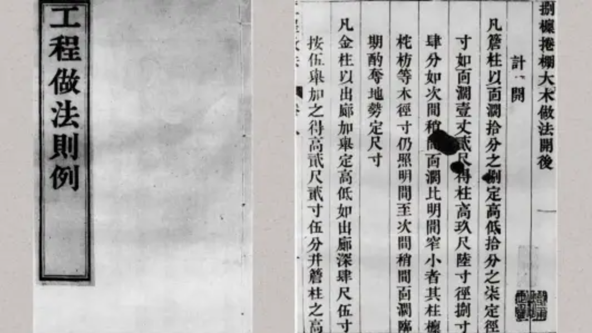

清雍正十二年（1734年），工部颁布这部清代建筑"国标"，标志着中国古代建筑技术标准化与制度化的巅峰。它将"斗口"确立为核心模数，成为紫禁城、天坛、颐和园等清代官式建筑的营造法典。

从六大维度直观展示清代建筑法典的技术实力与特点
《工程做法则例》的三大支柱性贡献，奠定清代官式建筑200余年的营造基础
核心概念：以斗拱最下方坐斗的开口宽度为基本模数单位，称为"斗口"，共分为11个等级（从1寸到6寸）。所有大木构件（柱、梁、枋）的尺寸均以"斗口"的整数倍来确定。
设计革命：相比宋代《营造法式》的"材分制"（比例关系），"斗口制"采用绝对尺寸，使得设计计算更加直接、固化，极大提高了施工效率和管理便利性。
| 构件名称 | 与斗口关系 | 示例（一等材·斗口六寸） |
|---|---|---|
| 檐柱直径 | 6斗口 | 约合清代营造尺3.6尺 |
| 檐柱高度 | 60斗口 | 约合36尺 |
| 大梁厚度 | 8-10斗口 | 根据跨度调整 |
预算控制：《工程做法则例》的后半部分《物料价值》开创性地列出了极其详细的工料数据，包括各类构件所需木材体积、瓦件数量、油漆用量及工匠工时。
管理意义：这使得任何皇家工程从设计之初就能精确计算成本和工期，有效防止腐败与浪费，具备了现代工程预算管理的雏形。
| 控制维度 | 具体内容 | 管理目的 |
|---|---|---|
| 材料用量 | 精确到每根梁、柱的木材体积 | 杜绝材料浪费与虚报 |
| 人工定额 | 各工序所需工匠人数与工时 | 控制工期与人工成本 |
| 造价核算 | 结合《物料价值》计算总造价 | 实现精准预算与审计 |
全面覆盖：《则例》详细规定了27种官式建筑的大木作做法，涵盖宫殿、坛庙、陵寝、衙署等所有官方建筑类型。
等级森严：从最高等级的"殿"（如太和殿）到"阁"、"楼"、"亭"等，每种建筑类型都有对应的斗口等级、构件尺寸和装饰规格，体现了严格的等级礼制。
| 建筑类型 | 斗口等级 | 主要用途 |
|---|---|---|
| 殿（九檩） | 一等材（六寸） | 皇宫正殿，如太和殿 |
| 阁（七檩） | 二等材（五寸五分） | 皇家藏书、佛教建筑 |
| 亭（方/圆） | 五至七等材 | 园林景观建筑 |
权威标准：作为清代200余年官式建筑的唯一营造标准，直接指导了故宫、天坛、颐和园、清东陵、清西陵等世界遗产的建设。
研究基石：是今天研究、鉴定和修复清代古建筑最核心的文献依据。现存多个重要版本，如清雍正原刊本、民国陶湘石印本等。
| 影响方面 | 具体体现 |
|---|---|
| 建筑修复 | 故宫大修的核心依据 |
| 学术研究 | 清代建筑史研究的基石文献 |
| 文化传承 | 理解清代建筑思想的关键 |
从宋代"比例美学"到清代"绝对规制"的演变轨迹
| 对比维度 | 《营造法式》 (宋·1103年颁布) |
《工程做法则例》 (清·1734年颁布) |
对比解读与时代特点 |
|---|---|---|---|
| 核心模数 |
"材分制" • "材"：拱的断面高宽比(3:2)，分八等 • "分"：材高的1/15，为最小单位 • 所有尺寸为"材"或"分"的倍数 |
"斗口制" • "斗口"：斗拱最下方坐斗的开口宽度，分十一等 • 所有大木构件尺寸为"斗口"的整数倍 |
从"比例关系"到"绝对尺寸" • 宋代：模数是比例关系，更灵活，强调构件间的数学关系 • 清代：模数是具体尺寸，更直接、固化，便于快速估算和管理 |
| 设计导向 |
"以材为祖" 强调建筑的整体比例与结构逻辑之美，留有较大的设计弹性，工匠可发挥创造性。 |
"斗口为纲" 强调建筑的等级礼制与工料控制，一切以斗口等级为准，设计弹性小，强调标准化。 |
从"结构美学"到"等级礼制" • 宋代：导向是技术与艺术的结合，追求结构合理与形态优美 • 清代：导向是管理与效率，首要确保建筑等级分明、造价可控 |
| 建筑风格体现 |
宏大、舒朗、典雅 • 屋顶坡度相对和缓，出檐深远 • 斗拱硕大，结构性强 • 柱列有"生起"、"侧脚"，视觉灵动 • 整体风格典雅，比例修长 |
严谨、华丽、密集 • 屋顶坡度陡峭，翼角起翘高 • 斗拱变小变密，装饰性增强 • 柱列严格横平竖直，排列规整 • 整体风格严谨华丽，装饰繁复 |
从"唐风宋韵"到"明清规制" • 宋代：反映了文化繁荣下的自信与包容，建筑是技术与艺术的载体 • 清代：体现了中央集权下的秩序与威严，建筑是等级与权力的象征 |
清雍正十二年，《工程做法则例》由工部正式颁布，成为清代官式建筑的强制性营造标准，统一全国官式建筑规范。
在乾隆朝达到应用高峰，指导修建了颐和园、圆明园、承德避暑山庄等大批皇家建筑，成为"康乾盛世"的建筑技术基础。
尽管国势日衰，《则例》仍是官方建筑唯一标准，指导了晚清陵寝、衙署等建筑的修建，制度延续性极强。
陶湘等人重刊《工程做法则例》，使这部重要文献得以流传，为近代中国建筑史研究提供了关键材料。
成为故宫、天坛等世界文化遗产修缮保护的核心技术依据，指导了新中国多次重大古建筑修复工程。
《工程做法则例》代表了中国古代建筑标准化的顶峰。它将宋代《营造法式》的"比例美学"发展为清代"绝对规制"的精密工程体系，以"斗口"为纲，以工料为目，构建了一套高效、精确、可大规模复制的官式建筑营造系统。这不仅是技术的进步，更是帝国管理体制在建筑领域的深刻体现。